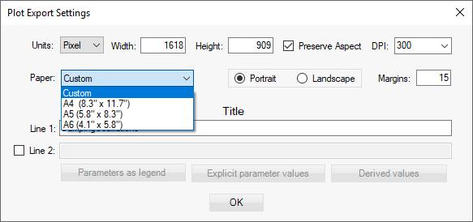
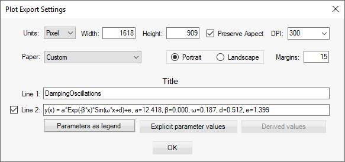
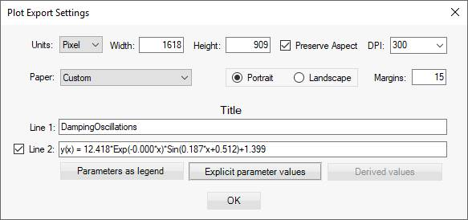
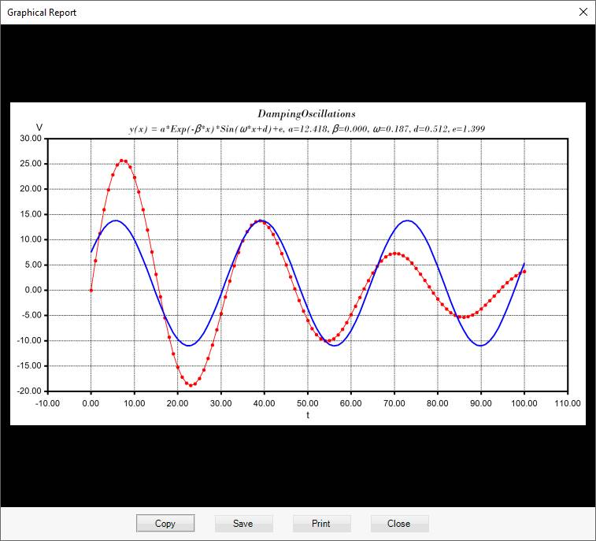

To create graphical report select Reports > Graphical report from the menu or press Alt + G keys.
In the plot export dialog you can modify the report to a specified size, resolution and title information. You can choose between pixels, inches and cm units:
Use pixel units when you want to store the graphical report on the computer and you will use only the computer screen for visualization.
If the report will be printed and/or inserted into another document which will be printed, providing the DPI of the printer and proper paper size will improve the quality of the print.
You can select one of the predefined paper sizes:

The first line is automatically set to the title of the project but you can include optionally second line on the graph title.
You can provide your own text in it or have LybraFit auto-generate text for you. If you press the Model with parameters as legend the second line will show the math expression and separately each of the parameters with its value:

If you click on Model with explicit parameter values the values of parameters will be included in the math expression:

After you have provided setting for the graphical report click Ok button. This opens the graphical report preview window:

From here you can copy paste the report image into another document, save it as an image file or print it.